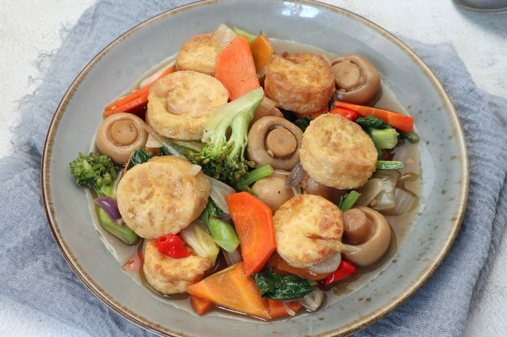

Sapo Tofu Recipe

Description
To me this is one of the ultimate comfort food when you're under the weather, wether you choose to eat it with a warm cup of rice, porridge or the Sapo Tofu by itself you really can't go wrong to be honest
Ingredients
- 2 pieces of tofu, thinly sliced
- 1 pack of Sasa Original Multipurpose Seasoning Flour
- 150 grams of white mustard greens, soaked, drained
- 100 grams of peeled shrimp
- 3 Hioko mushrooms, soaked, cut into pieces
- 3 tbsp cooking oil, for sautéing
- 5 cloves of garlic, chopped
- 1/2 onion, thinly sliced crosswise
- 1 stalk of spring onion, sliced
- 1 piece of ginger, cut into matchsticks
- 4 tbsp oyster sauce
- 1 tbsp fish sauce
- 400 ml Water
- 1 tsp Sasa Chicken Seasoning Extract
- 2 tbsp Sesame Oil
- 2 tbsp cornstarch, dissolve with a little water